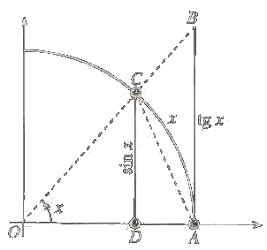

Limiti notevoli
A techinique for calculation of limits consists in restoring to limits already knwon said remarkable limits. Tale strategia permette di risolvere ampie gamme di limiti che presentano forme di indecizione.
Proposition 4.10.1 The following holds
Proof. It is an indeterminate form 0/0. We use Theorem 4.1.8 to show that the right-hand and left-hand limits are both 1. Observe that sin x and x are both odd functions. Therefore f(x) = (sin x) / x is an even function, with a graph symmetric about the y-axis. This symmetry implies that the left-hand limit at 0 if exits is equal to the right-hand limit.
we shall focus on the right-hand limit. Take a look at the followin diagram:
The are of the triangle OCA is less than that of the circular sector OCA which in turn is less than that of the triangle OBA. We can express the areas as
Area Δ OPA = 1/2 ⋅ base ⋅ height = 1/2 ⋅ 1 ⋅ sin x
Area sector OCA (radius r) = 1/2 ⋅ r2 x = x/2
Area Δ OBA = 1/2 ⋅ base ⋅ height = 1/2 ⋅ 1 ⋅ tg x
It follows that:
sin x/2 < x/2 < tg x/2
that is
sin x < x< tg x
dividing by sin x, we have:
1 < x / sin x < 1/ cos x
Taking reciprocals reverses the inequalities:
1 > sin x/x > cos x
Since limx ⟶ 0+ cos x = 1, the sandwich theorem gives
■
Proposition 4.10.2 We have that
Proof. From the definition of tangent
Proposition 4.10.3 We have that
Proof. We have that
Definition 4.10.4 (Asymptotic comparison) We say that f ~ g as x ⟶ x0 if the limit of the ratio of the two function is 1, that is
The limits we have studied can be written with this notation as
sin x ~ x 1 − cos x ~ x2/2 ex − 1 ~ x log(1 + x) ~ x